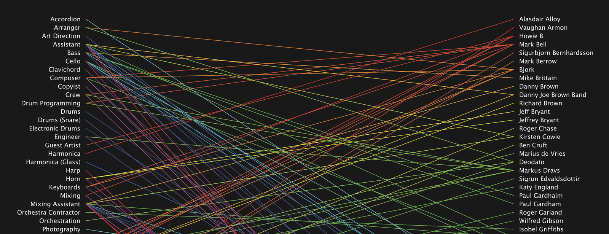
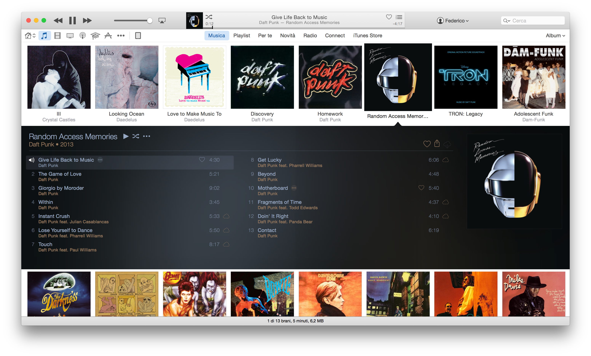
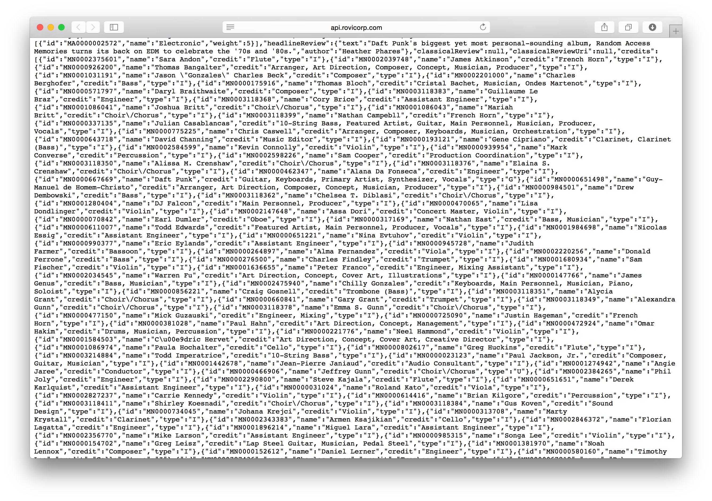

Have you ever asked yourself how many people are involved in the creation of the songs you love and listen every day?
In the past – before the advent of music in digital format – it was easy to discover their names and their roles: you just had to read the credits printed on vinyl’s sleeve or inside the CD’s booklet.
Today this process is much more complex due to the interfaces of the software that we use.
As displayed in the image below – which shows iTunes’ UI – beside the headline artist, the tracks and album titles, no other informations are shown to the listener.
This issue have recently raised deep concerns among those musicians and engineers, who, in particular, have worked on the latest digital-only releases: most of them rely on their name being associated with a well-known musicians to find new job opportunities.
The music industry has always relied on these kind of collaborations: nowadays many recording studios are still the go-to choice for many musicians because somebody else recorded a great album there.
With the launch of Music a few months ago, an on-line petition – which has been signed by nearly 40.000 people - has been created to bring public attention to this issue.
At the moment, the petition doesn’t seem to have had any effect.

Altough these data couldn’t be found in any software we use everyday, there are some databases that gather and collect all these informations as metadata.
Most of these database may be accessed for free but they all have one major problem: the format used to display these data is hard to read and you can’t easily work with it if you don’t have any programming/data analysis background.
For example: the screenshot below shows the raw data returned from a simple database’s query.
When I realized this, I was studying Processing, a flexible programming language used by artists, designers and researchers for prototyping their ideas.
The aim of Give them Credits is to make these data easily accessible and literally give credit to all those people involved in the creation of beautiful music albums.
The program uses the Rovi database which cointains millions of metadata about albums, tracks and artists.
At the current stage, the app requires the album name as input and generates an infographic in real time. At the final stage I hope to make it fully interactive but I still don’t know how to do it :)
Give them Credit is an open source project. The source code is available on GitHub and is licensed under GNU GPL v2.0.
While developing this project I learned a lot of new things: I never made an infographic before and haven’t a design background.

I would like to virtually thank Jer Thorp aka blprnt for being an inspiration with his talks and works. I became obsessed with data because of him. Daniel Shiffman and his great series of video tutorials on Processing. Matthew Epler for his "Intro to Processing for Data Viz" tutorials. Evelina for being so patient, Cristina, Matteo and Veronica for their support.
As said before the whole project is avaialable on GitHub (GNU/GPL v2.0). The code is a little bit messy right now but I’ll clean it up soon. If you like this project and want to learn more, please do not hesitate con drop me a line or a tweet.
The project was displayed for the first time in Verona at Path Festival (4-5 September 2015).
Six 50x70cm posters were printed on high-quality photographic paper. The artists/albums chosen for the exhibitions were: